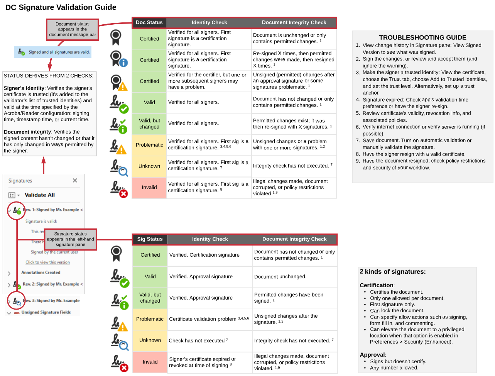
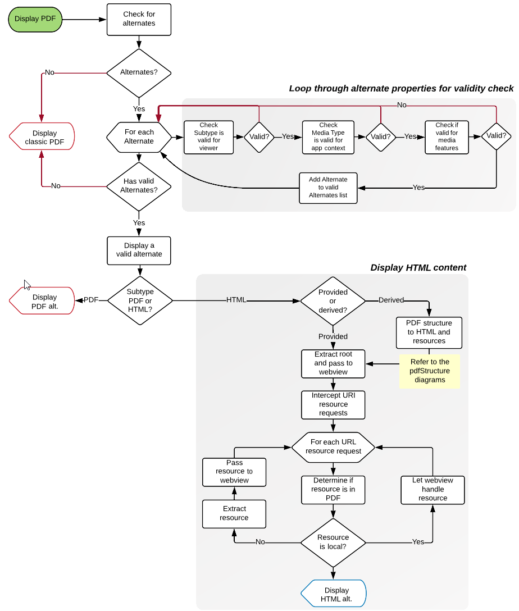

Example Diagrams
My tool-du-jour is Lucidchart. Reasons:
Assets are collaborative.
Single source: A single online source updates instantaneously in any number of locations.
Easy creation of shareable icon and image libraries
Support for advance features such as image maps.
In short: Lucidchart is scalable.
Quick Key
Workflow diagram
Code analysis